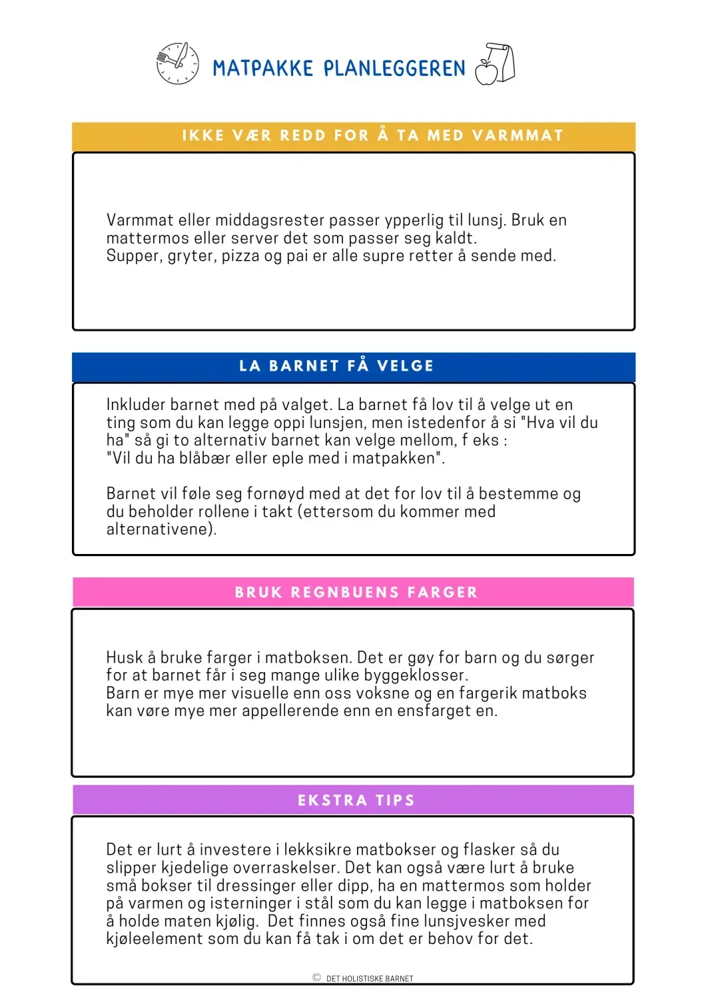
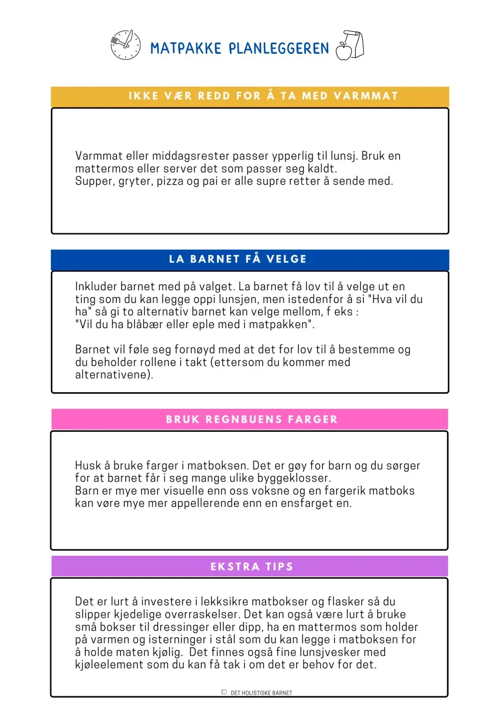

Syntes du det er vanskelig å finne på hva du skal sende med i matpakken? Da kan det være lurt å planlegge hele uken på forhånd.
Her finner du en matpakke planlegger du kan printe ut. Se også noen enkle tips til hvordan du kan planlegge enklest mulig.
 

Under ser du forslag til matpakke, men du kan også laste ned arket til høyre under "downloads"